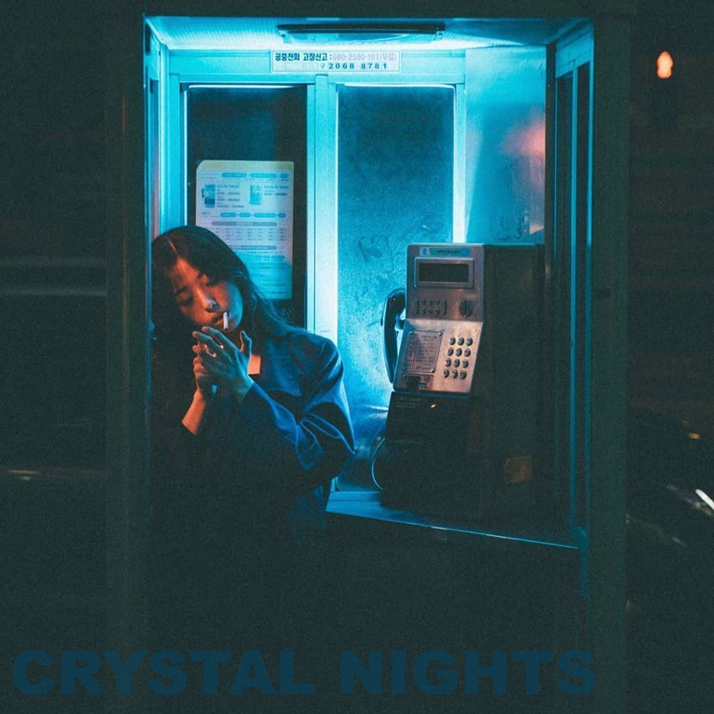

2017 / music / art direction
A compact EP world built from bold type, grain, midnight color, and the feeling of an analog signal moving through a quiet room.

The artwork avoids over-explaining the sound. It uses a limited palette, a disciplined grid, and a graphic rhythm that can survive as a thumbnail, poster, or social fragment.
The project sits inside the broader portfolio as a reminder that music, software, and image-making all share timing, texture, and restraint.